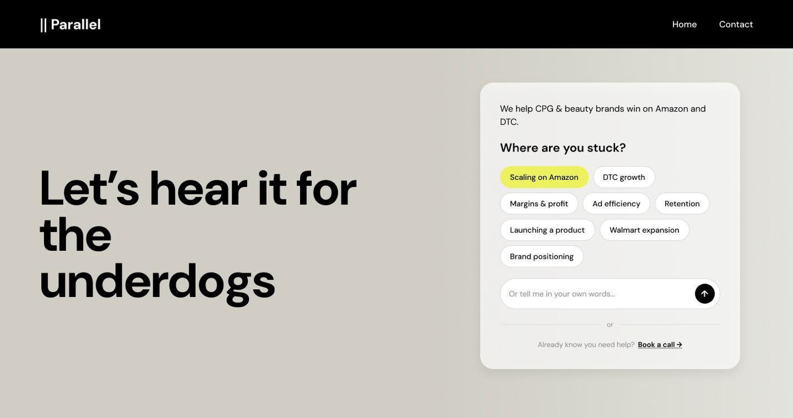

- Role
- Lead product designer
- Team
- Agency founder, one engineer
- Timeline
- 2026
- Problem
- The chatbot is Parallel's front door: the first place a prospective client meets the founder's thinking, and the main path to a booked call. The live version asked a chain of screening questions before offering anything useful, so visitors expecting expertise got an intake form instead.
- Outcome
- I designed and shipped v1, studied it with three target users, and turned six ranked frictions into an approved v2 that answers every one.

Context
Parallel is a boutique e-commerce strategy agency for CPG and beauty brands. Its chatbot sits on the agency's website and is trained on the founder's voice and expertise, so visitors can get a taste of his thinking before they book a call.
For a boutique agency, that matters: the founder can only take so many calls, so the chatbot has to carry his expertise to every visitor and send the right ones to his calendar.
I designed the first version as a single flow. A button opened a chat that asked a series of lead-qualifying questions and ended at a booking calendar. Once it was live, I set out to test my own design with real users and fix whatever wasn't working.
Testing the live chatbot
I ran moderated walkthroughs of the live chatbot with three people who match Parallel's audience: a current client who founded a brand, an agency CEO, and a former marketplace lead. A follow-up survey covered both the technical execution and the conversation itself.
The execution held up well, so those parts stayed in the redesign.
Noticed the chat button right away.
VisibilityFound the responses easy to understand.
ClarityMoved through the booking calendar smoothly.
BookingConfirmed the AI sounded like the founder.
VoiceThe core finding
The problem was structural. A single, rigid flow front-loaded screening questions before delivering any value, and each participant described the same frustration in their own words.
It promised his expertise but delivered an intake form that interrogates.
It's a receptionist, not a salesperson.
It's action-oriented but doesn't tell you what Parallel is.
Six frictions, ranked
I ranked every pain point by how many participants raised it and how much it would affect bookings. The redesign had to answer all six.
One flow can't serve different intents
3 of 3 participants, high priority
Too many questions before booking
2 of 3, high priority
It qualifies but doesn't sell Parallel
2 of 3, high priority
No sense of what the chat involves
1 of 3, medium priority
Privacy concerns with no reassurance
1 of 3, medium priority
No social proof
1 of 3, medium priority
Key decisions
Seven decisions shaped v2. Each one answers a finding, and most borrow from patterns that already work in e-commerce.
Two doors for two kinds of visitor
The situationv1 assumed everyone arrived with the same goal. In fact, cold visitors needed to build trust first, while warm leads already wanted a call, and one path failed both.
What I choseAn explore door, where visitors tap a struggle in a word cloud, and an express door that goes straight to booking. Both converge on the same booked call, so there's one outcome to measure.
Why it worksIt's the same logic as browsing versus Buy Now in a store: never make a ready buyer sit through the discovery experience.
Give value before asking for anything
The situationv1 qualified visitors before it showed them why Parallel was worth talking to.
What I choseThe explore door opens with a tailored insight in the founder's voice. Questions come only after the visitor has received something useful.
Why it worksEvery ask has to be earned. The order of value and ask matters more than the number of questions.
One card instead of a chain of questions
The situationAsking one question at a time felt conversational, but it caused fatigue, and visitors couldn't tell how much more was coming.
What I choseThe bot frames a short, finite ask and shows every field at once in a single card.
Why it worksA conversational interface isn't always the right one, even inside a chatbot. Like a checkout progress bar, a visible, bounded request lowers abandonment.
Never ask twice
The situationExplore visitors have already told the bot what they're struggling with by the time they reach the qualifying step.
What I choseTheir struggle carries over, so their card is shorter than the express version.
Why it worksEach repeated question adds to the cost of a flow. Carrying context forward is the conversational version of a prefilled checkout.
Reassure at the moment of doubt
The situationParticipants wanted proof and privacy reassurance, but sending them to a case-study page would break the flow.
What I choseTestimonials appear as a proof layer at moments of hesitation while the chat stays open, and a brief privacy note sits near the input.
Why it worksIt's the same reason reviews sit beside Add to Cart: put the reassurance where the hesitation happens.
Keep the voice that works
The situationAll three participants confirmed the bot sounded like the founder. It was the one part of v1 everyone trusted.
What I chosev2 builds on that voice and gives it a bigger role, leading the explore door with an insight rather than a question.
Design for the founder too
The situationThe founder still needs context before each call, which is why v1 front-loaded a screener.
What I choseEvery booking sends him a short summary of the visitor's struggle, brand, stage, and contact details, so he walks in prepared without the visitor sitting through a screener.
The design
The chatbot moves out of the floating widget and into the homepage hero, using the site's own type and colors. The headline stays, and the right-hand column becomes the entry. The booking calendar that tested well in v1 is unchanged.
Results and what's next
The founder approved the v2 scope, and it's waiting on implementation. Once it's live, I'll re-run the same study and report these measures against v1.
Visitors who start a conversation from the hero.
Awaiting buildBooked calls from the explore and express doors.
Awaiting buildDrop-off before booking, compared with v1.
Awaiting buildLooking back
I had treated qualifying visitors as the same thing as converting them. v1 did exactly what I designed it to do, collecting information, and that turned out to be the problem. Now I start with what a visitor needs to get from a flow before deciding what the business needs from them.